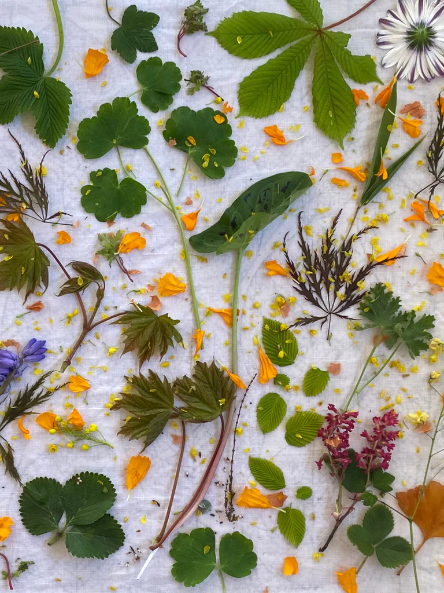
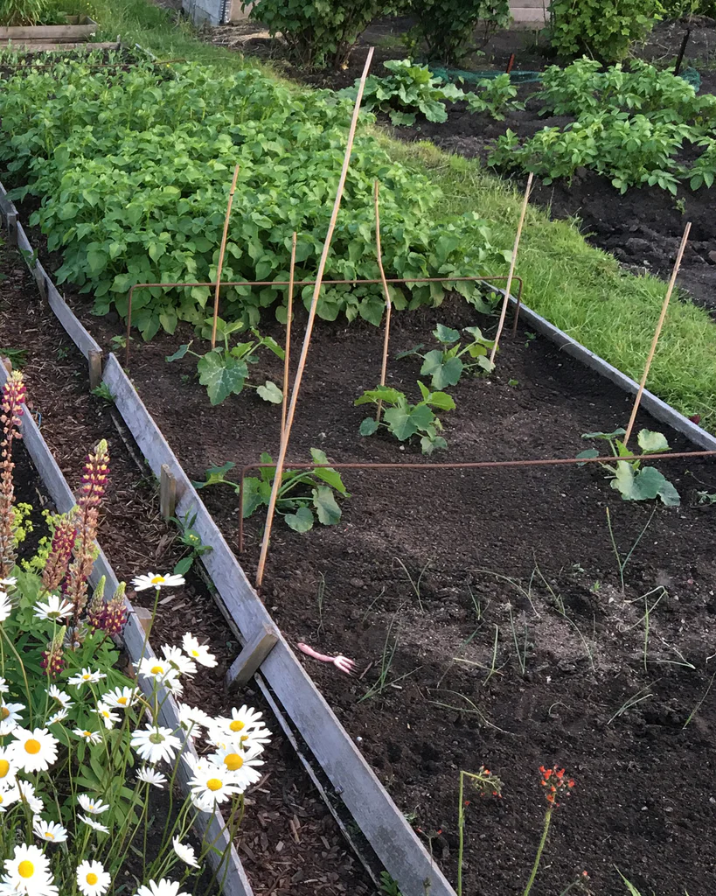
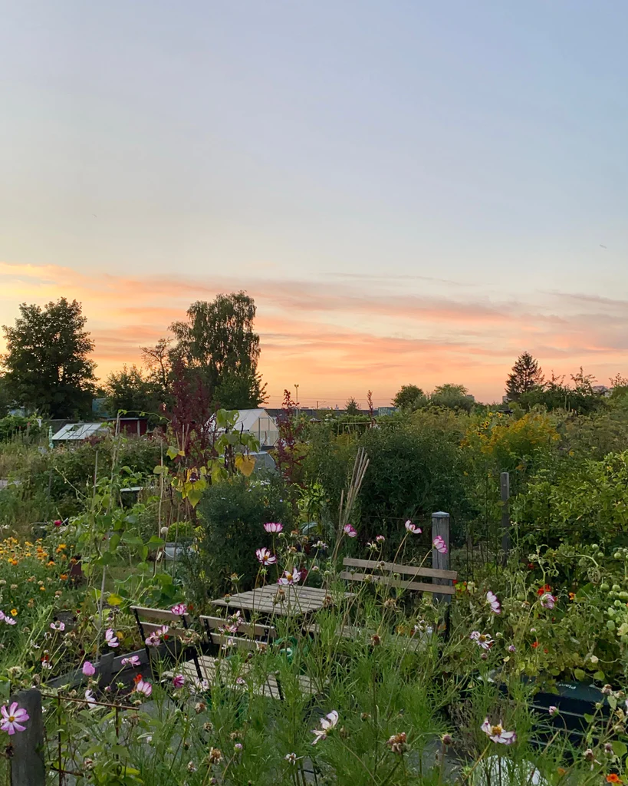
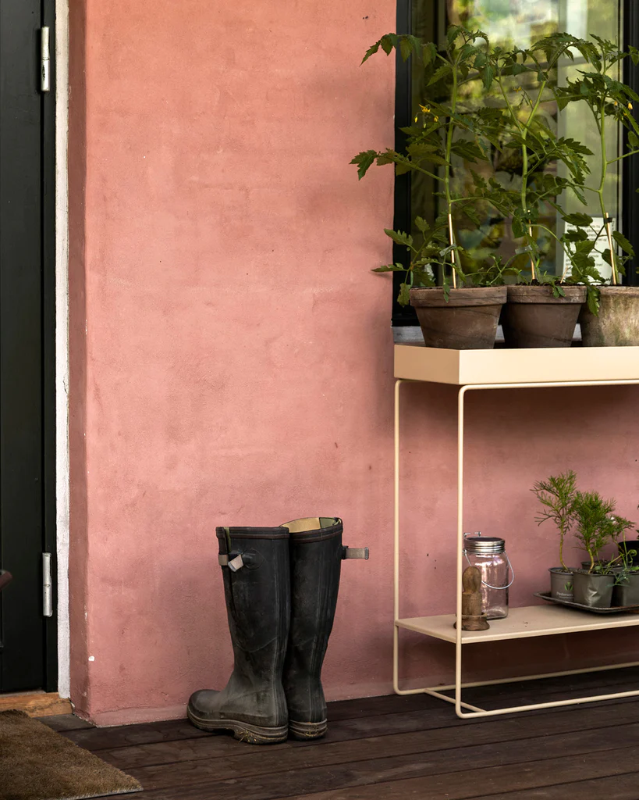

GREEN LIVING Growing a Garden
A fulfilling avocation that never gets old, gardening rewards you in various ways throughout the different seasons. We consulted two garden experts to get their top tips for cultivating the ideal green sanctuary during all months of the year.
To many, the garden represents an almost sacred sanctuary; a designated place where you instantly feel grounded and reconnect with nature, making you forget about the stressors of everyday life.As we carefully plant seeds in pots and flower beds, faithfully and patiently watering and nurturing with the hope that our efforts will result in fresh green sprouts emerging from the soil, we are reminded of the beauty that lies in the simple.
A fulfilling avocation that never gets old, gardening is as much about the process as the final result. While the winter and autumn seasons largely revolve around creating new ideas and creating the necessary plans for growing your garden, the summer and spring months present a dynamic time for first sowing and fertilising, and, with time, enjoying and harvesting the myriad of colourful flowers, lush green plants and vegetables, fruits and berries that have grown from your efforts. In other words, gardening is all about nurturing and tending to something that rewards you in various ways throughout the different seasons.
We consulted garden experts Dorthe Kvist and Jeanette Lindholdt Madsen to get their top tips for cultivating the ideal garden during every month of the year.
The Experts’ Garden Calendar
-

- Winter
- DECEMBERYour garden is sleeping. If you’re lucky, it will look lovely in the freshly fallen snow.
- JANUARYThe year is just beginning and we are gradually starting to make plans for how we want the garden to be. Spend time reading seed catalogues and planning your new garden projects.
- FEBRUARYThis is when many garden enthusiasts become impatient. It’s too cold to do anything outside, but if by the end of February you’re itching to get started, you can begin by germinating seeds indoors in mini greenhouses
-

- Spring
- MARCHMarch is always the time for cleaning up. Rake the lawn, sweep the leaves and add them to the compost heap, scrub the terrace and oil the garden furniture.
- APRILIn April, start filling your pots with spring flowers, get the kitchen garden ready for sowing, put the chitted potatoes in the ground and just enjoy the lovely spring sunshine as much as possible.
- MAYMay is when everything starts to sprout. Plant your tomatoes, chillies and cucumbers out in the greenhouse, and your lettuce and peas in the kitchen garden. Cover the soil under the strawberry plants with straw. Now’s the time to enjoy
-

- Summer
- JUNEIn June, you can finally start harvesting the first crops. Enjoy fresh baby salad leaves, early peas, as well as the first beans and types of squash.
- JULYJuly is the month when the garden is a pure cornucopia of treasures. Remember to water in the evening and control the snails now that you’re up and running. You can pick the first flower bouquets and go on a daily rampage in the kitchen garden. Remember to ventilate the greenhouse when you visit, and finally - take plenty of breaks and enjoy your beautiful lush garden.
- AUGUSTThe month when you can give all your friends sumptuous bouquets of dahlias and fragrant roses. Practical jobs such as sowing green manure in the empty kitchen garden beds and removing offshoots from the strawberry plants should be carried out now. And don’t forget to put water out for the birds and the thirsty insects!
-

- Autumn
- SEPTEMBERSeptember is an important month for next spring’s flowers. Plant plenty of bulbs, e.g. tulips, daffodils and pearl hyacinths. This month is also a good time to plant larger things such as trees, flowering shrubs and perennials.
- OCTOBERYou can enjoy some really precious moments in the garden in autumn. Cook over a campfire and enjoy the last warm rays of sun under a blanket with a hot cup of tea. In October, you can gradually pack away the garden, divide your perennials, collect seeds from your favourite plants, prune the fruit trees and harvest the last of the herbs.
- NOVEMBERIn November, remove the saucers from under pots so that they don’t get damaged by the frost. Empty the water butt if you have one and store the garden furniture away or cover it. Then you can look forward to starting all over again in the spring.
More from the Stories
-
HOME STORIESThe Home of Connie Barton
-
LIVINGTake Care of Your Interior
-
SET THE TABLEThe Artistry of Dining Setting Memories in Silver and Silk